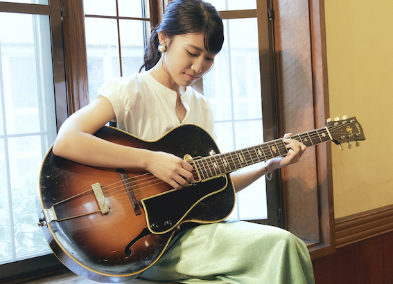

●●●1stアルバム『Introducin’』のリリースツアーに時間の変更があります
(2021/7/10更新)8/14(土)大阪Mister Kelly's
スタート時間が19:30→19:00に変更になりました。
8/13(金)名古屋も変更がありましたらお知らせします。
●●●仙台・福島でのコンサートが決まりました
(2012/7/10更新)9/10(金)仙台モンドボンゴ詳細後日
9/11(土)福島テルサ
開場15:30 開演16:00 入場料¥2,500
9/12(日)写真美術館(ミニコンサート)詳細後日
メンバー：浅利史花g 三嶋大輝b 柳沼佑育dr
(9/12のみ浅利史花g、三嶋大輝bのデュオ)

●●●「Introducin'」楽曲配信についてのお知らせ
(2021/6/2更新)配信会社の変更に伴い休止していた「Introducin'」ですが、
本日６月２日より配信が再開されました。
ご不便をおかけし申し訳ありませんでした。
引き続きお楽しみいただければ幸いです！
よろしくお願いいたします。